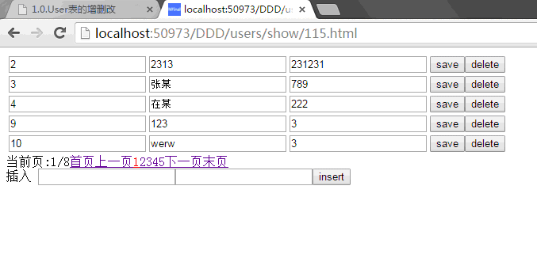

public class users:Controller
{
//分页显示，p为页码数
public void show(int p)
{
var con = Models.Common.OpenConnection();
//创建Page对象,变量p为当前页数，5为每页记录数
NFinal.Page pg = new NFinal.Page(p, 5);
//计算URL所用到的函数，变量pi为当前页数
pg.GetUrlFunction = (pi) => { return Url.DDD_users_show(pi); };
//分页语句获取分页对象
var us = con.Page("select * from users",pg);
con.Close();
View("show.aspx");
}
//编辑
public void edit(int id,string name,string pwd)
{
var con = Models.Common.OpenConnection();
var count = con.Update("update users set name=@name,pwd=@pwd where id=@id");
con.Close();
AjaxReturn(count > 0);
}
//插入
public void insert(int id, string name, string pwd)
{
var con = Models.Common.OpenConnection();
var count = con.Insert("insert into users(name,pwd) values(@name,@pwd)");
con.Close();
AjaxReturn(count > 0);
}
//删除
public void delete(int id)
{
var con = Models.Common.OpenConnection();
var count = con.Delete("delete from users where id=@id");
con.Close();
AjaxReturn(count > 0);
}
}
2.然后添加视图：
<%@ Page Language="C#" AutoEventWireup="true" CodeBehind="show.aspx.cs" Inherits="WebApplication1.DDD.Views.Default.users.show" %>
<%@ Register Src="~/DDD/Views/Default/Common/Public/Navigator.ascx" TagPrefix="uc1" TagName="Navigator" %>
<!DOCTYPE html>
<html xmlns="http://www.w3.org/1999/xhtml">
<head runat="server">
<meta http-equiv="Content-Type" content="text/html; charset=utf-8"/>
<title></title>
<script src="/Scripts/jquery-1.11.2.min.js"></script>
<script src="/Scripts/Url.js"></script>
</head>
<body>
<form id="form1" runat="server">
<div>
<table>
<foreach enumerator="<%var u = ViewBag.us.GetEnumerator(); %>">
<tr>
<td>
<input id="id_<%=u.Current.id %>" type="text" value="<%=u.Current.id %>" readonly="readonly" />
</td>
<td>
<input id="name_<%=u.Current.id %>" type="text" value="<%=u.Current.name %>" />
</td>
<td>
<input id="pwd_<%=u.Current.id %>" type="text" value="<%=u.Current.pwd %>" />
</td>
<td>
<button onclick="save(<%=u.Current.id %>);" type="button">save</button>
<button onclick="del(<%=u.Current.id %>);" type="button">delete</button>
</td>
</tr>
</foreach>
</table>
<uc1:Navigator runat="server" id="Navigator" db="<%#ViewBag.pg %>" /><br />
插入
<input id="name" type="text" value="" />
<input id="pwd" type="text" value="" />
<input type="button" onclick="insert();" value="insert" />
</div>
</form>
</body>
</html>
<script>
//删除
function del(id)
{
$.post(Url.DDD_users_delete(id), {}, function (data) {
if (data) {
alert("删除成功");
}
else {
alert("删除失败");
}
});
}
//插入
function insert()
{
var id = $("#id").val();
var name = $("#name").val();
var pwd = $("#pwd").val();
$.post(Url.DDD_users_insert(id, name, pwd), {}, function (data) {
if (data) {
alert("添加成功");
}
else {
alert("添加失败");
}
});
}
//保存更改
function save(ext)
{
var id = $("#id_" + ext).val();
var name = $("#name_" + ext).val();
var pwd = $("#pwd_" + ext).val();
$.post(Url.DDD_users_edit(id, name, pwd), {}, function (data) {
if (data) {
alert("保存成功");
}
else {
alert("保存失败");
}
});
}
</script>
2.右键点击WebCompiler.aspx.选择在浏览器中查看.
生成开始
生成结束

<!DOCTYPE html>
<html xmlns="http://www.w3.org/1999/xhtml">
<head>
<meta http-equiv="Content-Type" content="text/html; charset=utf-8" />
<title></title>
<meta http-equiv="Cache-Control" content="no-cache">
<script src="/Scripts/jquery-1.11.2.min.js"></script>
</head>
<body>
<script>
$.getScript("/Scripts/Url.js?_" + Math.random(), function () {
var p=1;
//生成URL所用的js函数是由NFinal自动生成
window.location.href = Url.DDD_users_show(p);
});
</script>
</body>
</html>
Show.cs中的代码如下:
public void show(int p)
{
var con = new System.Data.SQLite.SQLiteConnection(NFinal.Config.ConfigurationManager.ConnectionStrings["Common"].ConnectionString);
con.Open();
NFinal.Page pg = new NFinal.Page(p, 5);
pg.GetUrlFunction = (pi) => { return Url.DDD_users_show(pi); };
#region var us;分页
var __show_us_command__ = new System.Data.SQLite.SQLiteCommand("select count(*) from users", con);
pg.recordCount =System.Convert.ToInt32(__show_us_command__.ExecuteScalar());
__show_us_command__.Dispose();
pg.count = (pg.recordCount % pg.size==0)? pg.recordCount/pg.size:pg.recordCount/pg.size+1;
//传页码时用的变量名
if (pg.index > pg.count)
{
pg.index = pg.count;
}
if (pg.index < 1)
{
pg.index = 1;
}
var us = new NFinal.List<__show_us__>();
//计算得到SQL语句
__show_us_command__ = new System.Data.SQLite.SQLiteCommand(string.Format("select * from users Limit {0} Offset {1}",pg.size,(pg.index-1)*pg.size), con);
var __show_us_reader__= __show_us_command__.ExecuteReader();
if (__show_us_reader__.HasRows)
{
while (__show_us_reader__.Read())
{
var __show_us_temp__ = new __show_us__();
__show_us_temp__.id = __show_us_reader__.GetInt64(0);
__show_us_temp__.name =__show_us_reader__.IsDBNull(1)?null: __show_us_reader__.GetString(1);
__show_us_temp__.pwd =__show_us_reader__.IsDBNull(2)?null: __show_us_reader__.GetString(2);
us.Add(__show_us_temp__);
}
}
__show_us_reader__.Dispose();
__show_us_command__.Dispose();
#endregion
con.Close();
Write("<!DOCTYPE html><html xmlns=\"http://www.w3.org/1999/xhtml\"><head runat=\"server\"><meta http-equiv=\"Content-Type\" content=\"text/html; charset=utf-8\" /><title></title><script src=\"/Scripts/jquery-1.11.2.min.js\"><<script><script src=\"/Scripts/Url.js\"></script></head><body><form id=\"form1\" runat=\"server\"><div><table>");
var u= us.GetEnumerator(); while(u.MoveNext()){
Write("<tr><td><input id=\"id_");
Write(u.Current.id);
Write("\" type=\"text\" value=\"");
Write(u.Current.id);
Write("\" readonly=\"readonly\" /></td><td><input id=\"name_");
Write(u.Current.id);
Write("\" type=\"text\" value=\"");
Write(u.Current.name);
Write("\" /></td><td><input id=\"pwd_");
Write(u.Current.id);
Write("\" type=\"text\" value=\"");
Write(u.Current.pwd);
Write("\" /></td><td><button onclick=\"save(");
Write(u.Current.id);
Write(");\" type=\"button\">save</button><button onclick=\"del(");
Write(u.Current.id);
Write(");\" type=\"button\">delete</button></td></tr>");
}
Write("</table>");
pg.__render__ = ()=>{
Write("");
Write("当前页:");
Write(pg.index);
Write("/");
Write(pg.count);
Write("lt;a href=\"");
Write(pg.GetUrlFunction(1));
Write("\">首页</a><a href=\"");
Write(pg.index <= 1 ? "#" : pg.GetUrlFunction(pg.index - 1));
Write("\">上一页</a>");
for(int i = ((pg.index - 1) / pg.navigatorSize) * pg.navigatorSize + 1;i <= pg.count && i <= ((pg.index - 1) / pg.navigatorSize + 1) * pg.navigatorSize;i++){
if(i == pg.index){
Write("<a style=\"color:red;\" href=\"");
Write(pg.GetUrlFunction(i));
Write("\">");
Write(i);
Write("</a>");
}else{
Write("<a href=\"");
Write(pg.GetUrlFunction(i));
Write("\">");
Write(i);
Write("</a>");
}
}
Write("<a href=\"");
Write(pg.index>= pg.count ? "#" : pg.GetUrlFunction(pg.index + 1));
Write("\">下一页</a><a href=\"");
Write(pg.GetUrlFunction(pg.count));
Write("\">末页</a>");
};pg.__render__();
Write("<br /> 插入 <input id=\"name\" type=\"text\" value=\"\" /><input id=\"pwd\" type=\"text\" value=\"\" /><input type=\"button\" onclick=\"insert();\" value=\"insert\" /></div></form></body></html><script> function del(id) { $.post(Url.DDD_users_delete(id), {}, function (data) { if (data) { alert(\"删除成功\"); } else { alert(\"删除失败\"); } }); } function insert() { var id = $(\"#id\").val(); var name = $(\"#name\").val(); var pwd = $(\"#pwd\").val(); $.post(Url.DDD_users_insert(id, name, pwd), {}, function (data) { if (data) { alert(\"添加成功\"); } else { alert(\"添加失败\"); } }); } function save(ext) { var id = $(\"#id_\" + ext).val(); var name = $(\"#name_\" + ext).val(); var pwd = $(\"#pwd_\" + ext).val(); $.post(Url.DDD_users_edit(id, name, pwd), {}, function (data) { if (data) { alert(\"保存成功\"); } else { alert(\"保存失败\"); } }); } </script>");
}
show中的代码只是跳转并执行users下的Show方法.
4.右键点击show.html并选择在浏览器中查看,则可看到最终分页效果.
